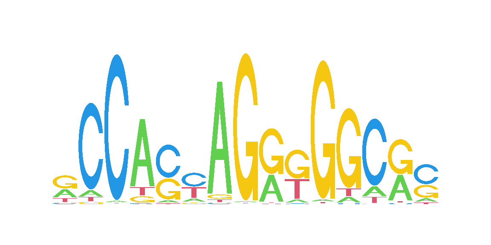

Single molecule footprinting data itself may already provide more than a single data modality: While 6mA calls provide information about the accessiblity of sequenced molecules, additional base modifications such as 5mCpG and 5hmCpG inform about endogenous modification states. When working with data from diploid organisms, the sequence at heterozygous loci allows separate quantification of individual alleles (see Section 7.2).
In the sections below we are illustrating the integration of the above data modalities (allele-specific accessibility and DNA methylation at CpG dinucleotides) with ChIP-seq data at heterozygous CTCF binding sites. This illustrates how the sequence variation that discriminates the two alleles affects the binding of CTCF, and consequently also the chromatin accessibility and DNA methylation of each allele.
8.1 Load data and packages
We start by loading the required packages, high-confidence heterozygous SNVs and preparing reference (REF) and alternative (ALT) version of the genome by injecting the SNVs into the genome assembly.
Show/hide code
# PackagesBSgenomeName <-"BSgenome.Mmusculus.GENCODE.GRCm39.gencodeM34"library(footprintR)library(ggplot2)library(patchwork)library(dplyr)library(ggpubr)library(GenomicRanges)library(GenomicAlignments)library(VariantAnnotation)library(SummarizedExperiment)library(BSgenomeName, character.only =TRUE)library(JASPAR2024)library(TFBSTools)library(universalmotif)library(forcats)library(Hmisc)library(parallel)library(stringdist)library(SparseArray)# number of CPUs to use for parallel tasksncpu <-24# modBam filesbamfilesC <-c(WT_1 ="data/mESC_wt_5mCG_5hmCG_rep1.bam",WT_2 ="data/mESC_wt_5mCG_5hmCG_rep2.bam")bamfilesA <-c(WT_1 ="data/mESC_wt_6mA_rep1.bam",WT_2 ="data/mESC_wt_6mA_rep2.bam")# ChIP bam fileschipbam <-c(CTCF_1 ="data/mESC_wt_CTCF_ChIP_rep1.bam", # GSM747534CTCF_2 ="data/mESC_wt_CTCF_ChIP_rep2.bam", # GSM747535CTCF_3 ="data/mESC_wt_CTCF_ChIP_rep3.bam") # GSM747534# Heterozygous SNVshetsnv <-readVcf("data/het_snp.vcf.gz")# ... extract SNV positions and make sure they are not indelshetpos <-as(rowRanges(hetsnv), "GPos")stopifnot(all(width(hetpos$REF) ==1L))stopifnot(all(lengths(hetpos$ALT) ==1L))stopifnot(all(width(unlist(hetpos$ALT)) ==1L))hetpos$ALT <-unlist(hetpos$ALT)# Load genomegnm <-get(BSgenomeName)# ... create refernce and alternative genomes by injecting SNVsgnmREF <- gnmALT <-getSeq(gnm)for (chr innames(gnmREF)) { i <-which(seqnames(hetpos) == chr) gnmREF[[chr]] <-replaceLetterAt(x = gnmREF[[chr]],at =start(hetpos)[i],letter =unlist(hetpos$REF[i]),verbose =interactive()) gnmALT[[chr]] <-replaceLetterAt(x = gnmALT[[chr]],at =start(hetpos)[i],letter =unlist(hetpos$ALT[i]),verbose =interactive())}
8.2 Scan the genome with the CTCF motif and identify sites that overlap sequence variants
We next get the CTCF motif from the Jaspar database (Rauluseviciute et al. (2024)) and scan the genome for high scoring matches that overlap heterozygous SNVs.
We will scan both reference and alternative version of the genome and combine them afterwards, in order to not miss any high-scoring CTCF motif matches due to the presence of SNVs.
Show/hide code
# get CTCF motif from Jasparjaspar <-JASPAR2024()dbfunc <-getFromNamespace(x ="db", ns ="JASPAR2024")mdb <- RSQLite::dbConnect(RSQLite::SQLite(), dbfunc(jaspar))tf_motif <-getMatrixByID(x = mdb, ID ="MA0139.2")RSQLite::dbDisconnect(mdb)seqLogo(toICM(tf_motif), xaxis =FALSE, yaxis =FALSE)

Figure 8.1
Show/hide code
# scan REF and ALT genomes for motif hitshitsREF <-scan_sequences(motifs = tf_motif,sequences = gnmREF,threshold =8e-5,threshold.type ="pvalue",RC =TRUE,use.gaps =FALSE,return.granges =TRUE,nthreads = ncpu,verbose =if(interactive()) 2else0)hitsALT <-scan_sequences(motifs = tf_motif,sequences = gnmALT,threshold =8e-5,threshold.type ="pvalue",RC =TRUE,use.gaps =FALSE,return.granges =TRUE,nthreads = ncpu,verbose =if(interactive()) 2else0)# combine (remove overlapping hits on the same strand)hits <-reduce(c(hitsREF, hitsALT))hits <- hits[width(hits) ==length(tf_motif)]
At this point, we have 539 thousand hits to the CTCF motif in the genome. We next select the sites that overlap any of our heterozygous SNVs.
Show/hide code
hits_het <-subsetByOverlaps(hits, hetpos, ignore.strand =TRUE)# filter out sites with more than 4 overlapping SNVsnSNVs <-countOverlaps(hits_het, hetpos, ignore.strand =TRUE)table(nSNVs)
nSNVs
1 2 3 4 5 6
5136 651 96 25 4 2
Show/hide code
hits_het <- hits_het[nSNVs <=4]
Finally, we score the 5908 heterozygous hits to get a motif match score for both reference and alternative alleles. We get a symmetric distribution around zero with similar numbers of motifs that increase and decrease there match score in ALT compared to REF. Only few motifs change there score by more than 50% of the maximal score (22.6).
We next annotate our CTCF sites with experimental measurements. To account for the limited resolution and exploit the autocorrelation of our experimental data, we will include the data in a small window of 180bp around each CTCF site. Furthermore, we will run the calculations in parallel over the sites using mclapply from the parallel package. This step is nevertheless slow and takes about ~13 seconds per site and CPU on our system.
All measurements will be calculated separately for each allele. For single molecule footprinting data, we do this by grouping the reads based on overlapping SNVs, as outlined in Section 7.2. For the ChIP-seq data, we load the read sequences using stackStringsFromBam from the GenomicAlignments package and separate them by allele based on overlapping SNVs. The CTCF ChIP samples correspond to the samples GSM747534, GSM747535 and GSM747536 from Stadler et al. (2011).
8.4 Visualize differences between alleles at each heterozygous CTCF site
We know that the binding of a transcription factor leads to an increase of local chromatin accessibility, as well as a decrease in local DNA methylation. We thus expect to find clear associations between the allelic changes of these two and CTCF ChIP signals, and also with changes of motif scores that are the underlying cause of allelic differences.
8.4.1 CTCF binding (ChIP) versus accessibility (6mA)
Rauluseviciute, Ieva, Rafael Riudavets-Puig, Romain Blanc-Mathieu, Jaime A Castro-Mondragon, Katalin Ferenc, Vipin Kumar, Roza Berhanu Lemma, et al. 2024. “JASPAR 2024: 20th Anniversary of the Open-Access Database of Transcription Factor Binding Profiles.”Nucleic Acids Res. 52 (D1): D174–82.
Stadler, Michael B, Rabih Murr, Lukas Burger, Robert Ivanek, Florian Lienert, Anne Schöler, Erik van Nimwegen, et al. 2011. “DNA-binding Factors Shape the Mouse Methylome at Distal Regulatory Regions.”Nature 480 (7378): 490–95.
Source Code
# Combining and comparing multiple data modalities {#sec-multiple-modalities}Single molecule footprinting data itself may already provide more thana single data modality: While 6mA calls provide information about theaccessiblity of sequenced molecules, additional base modifications such as5mCpG and 5hmCpG inform about endogenous modification states. When workingwith data from diploid organisms, the sequence at heterozygous loci allows separate quantification of individual alleles (see @sec-group-by-sequence).In the sections below we are illustrating the integration of the abovedata modalities (allele-specific accessibility and DNA methylation atCpG dinucleotides) with ChIP-seq data at heterozygous CTCF binding sites.This illustrates how the sequence variation that discriminates the twoalleles affects the binding of CTCF, and consequently also the chromatinaccessibility and DNA methylation of each allele.## Load data and packagesWe start by loading the required packages, high-confidence heterozygousSNVs and preparing reference (`REF`) and alternative (`ALT`) version of thegenome by injecting the SNVs into the genome assembly.```{r}#| label: load-packages#| message: false# PackagesBSgenomeName <-"BSgenome.Mmusculus.GENCODE.GRCm39.gencodeM34"library(footprintR)library(ggplot2)library(patchwork)library(dplyr)library(ggpubr)library(GenomicRanges)library(GenomicAlignments)library(VariantAnnotation)library(SummarizedExperiment)library(BSgenomeName, character.only =TRUE)library(JASPAR2024)library(TFBSTools)library(universalmotif)library(forcats)library(Hmisc)library(parallel)library(stringdist)library(SparseArray)# number of CPUs to use for parallel tasksncpu <-24# modBam filesbamfilesC <-c(WT_1 ="data/mESC_wt_5mCG_5hmCG_rep1.bam",WT_2 ="data/mESC_wt_5mCG_5hmCG_rep2.bam")bamfilesA <-c(WT_1 ="data/mESC_wt_6mA_rep1.bam",WT_2 ="data/mESC_wt_6mA_rep2.bam")# ChIP bam fileschipbam <-c(CTCF_1 ="data/mESC_wt_CTCF_ChIP_rep1.bam", # GSM747534CTCF_2 ="data/mESC_wt_CTCF_ChIP_rep2.bam", # GSM747535CTCF_3 ="data/mESC_wt_CTCF_ChIP_rep3.bam") # GSM747534# Heterozygous SNVshetsnv <-readVcf("data/het_snp.vcf.gz")# ... extract SNV positions and make sure they are not indelshetpos <-as(rowRanges(hetsnv), "GPos")stopifnot(all(width(hetpos$REF) ==1L))stopifnot(all(lengths(hetpos$ALT) ==1L))stopifnot(all(width(unlist(hetpos$ALT)) ==1L))hetpos$ALT <-unlist(hetpos$ALT)# Load genomegnm <-get(BSgenomeName)# ... create refernce and alternative genomes by injecting SNVsgnmREF <- gnmALT <-getSeq(gnm)for (chr innames(gnmREF)) { i <-which(seqnames(hetpos) == chr) gnmREF[[chr]] <-replaceLetterAt(x = gnmREF[[chr]],at =start(hetpos)[i],letter =unlist(hetpos$REF[i]),verbose =interactive()) gnmALT[[chr]] <-replaceLetterAt(x = gnmALT[[chr]],at =start(hetpos)[i],letter =unlist(hetpos$ALT[i]),verbose =interactive())}```## Scan the genome with the CTCF motif and identify sites that overlap sequence variantsWe next get the CTCF motif from the Jaspar database (@Rauluseviciute2024-bc)and scan the genome for high scoring matches that overlap heterozygous SNVs.We will scan both reference and alternative version of the genome and combinethem afterwards, in order to not miss any high-scoring CTCF motif matchesdue to the presence of SNVs.```{r}#| label: fig-motif#| fig.width: 6#| fig.height: 3# get CTCF motif from Jasparjaspar <-JASPAR2024()dbfunc <-getFromNamespace(x ="db", ns ="JASPAR2024")mdb <- RSQLite::dbConnect(RSQLite::SQLite(), dbfunc(jaspar))tf_motif <-getMatrixByID(x = mdb, ID ="MA0139.2")RSQLite::dbDisconnect(mdb)seqLogo(toICM(tf_motif), xaxis =FALSE, yaxis =FALSE)``````{r}#| label: scan-genome-with-motif#| warning: false# scan REF and ALT genomes for motif hitshitsREF <-scan_sequences(motifs = tf_motif,sequences = gnmREF,threshold =8e-5,threshold.type ="pvalue",RC =TRUE,use.gaps =FALSE,return.granges =TRUE,nthreads = ncpu,verbose =if(interactive()) 2else0)hitsALT <-scan_sequences(motifs = tf_motif,sequences = gnmALT,threshold =8e-5,threshold.type ="pvalue",RC =TRUE,use.gaps =FALSE,return.granges =TRUE,nthreads = ncpu,verbose =if(interactive()) 2else0)# combine (remove overlapping hits on the same strand)hits <-reduce(c(hitsREF, hitsALT))hits <- hits[width(hits) ==length(tf_motif)]```At this point, we have `r round(length(hits) / 1e3)` thousand hits to theCTCF motif in the genome. We next select the sites that overlap any of ourheterozygous SNVs.```{r}#| label: select-heterozygous-siteshits_het <-subsetByOverlaps(hits, hetpos, ignore.strand =TRUE)# filter out sites with more than 4 overlapping SNVsnSNVs <-countOverlaps(hits_het, hetpos, ignore.strand =TRUE)table(nSNVs)hits_het <- hits_het[nSNVs <=4]```Finally, we score the `r length(hits_het)` heterozygous hits to geta motif match score for both reference and alternative alleles.We get a symmetric distribution around zero with similar numbers ofmotifs that increase and decrease there match score in ALT compared to REF.Only few motifs change there score by more than 50% of the maximal score(`r round(hitsREF$max.score[1], 1)`).```{r}#| label: fig-score-changes#| fig.width: 6#| fig.height: 4# score hitsseqsREF <-getSeq(gnmREF, hits_het)seqsALT <-getSeq(gnmALT, hits_het)hits_het$scoreREF <-score_match(motif = tf_motif, match =as.character(seqsREF))hits_het$scoreALT <-score_match(motif = tf_motif, match =as.character(seqsALT))hits_het$scoreDelta <- hits_het$scoreREF - hits_het$scoreALThits_het$scoreDeltaPercent <- hits_het$scoreDelta / hitsREF$max.score[1] *100hits_het$scoreDeltaBinned <- Hmisc::cut2(x = hits_het$scoreDelta,cuts =c(min(hits_het$scoreDelta) -0.1, -10, -5, -2, 2, 5, 10,max(hits_het$scoreDelta) +0.1))hits_het$scoreDeltaBinned <-fct_rev(hits_het$scoreDeltaBinned)scoreDeltaBinnedCols <-structure(c("#611300", "#CC4E25", "#EBB0A8","#CCCCCC", "#B3D0E4", "#008BBD","#003560"),names =levels(hits_het$scoreDeltaBinned))ggplot(as.data.frame(hits_het), aes(scoreDeltaPercent)) +stat_bin(bins =20, geom ="col",aes(y =after_stat(count), fill =after_stat(x))) +scale_fill_gradient2(low = scoreDeltaBinnedCols[1],mid = scoreDeltaBinnedCols[4],high = scoreDeltaBinnedCols[7]) +geom_vline(xintercept =0, linetype ="dashed") +geom_vline(xintercept =c(-50, 50), linetype ="dotted") +coord_cartesian(xlim =c(-100, 100)) +labs(x ="Change of motif score (% of maximal score, REF - ALT)",y ="Number of CTCF motif hits",fill ="Change of\nmotif score") +theme_bw() +theme(legend.position ="inside",legend.position.inside =c(.02, .98),legend.justification =c(0, 1))```## Annotate heterozygous CTCF sitesWe next annotate our CTCF sites with experimental measurements. To account forthe limited resolution and exploit the autocorrelation of our experimental data,we will include the data in a small window of 180bp around each CTCF site.Furthermore, we will run the calculations in parallel over the sites using`mclapply` from the `parallel` package. This step is nevertheless slow andtakes about ~13 seconds per site and CPU on our system.All measurements will be calculated separately for each allele. For singlemolecule footprinting data, we do this by grouping the reads based onoverlapping SNVs, as outlined in @sec-group-by-sequence.For the ChIP-seq data, we load the read sequences using `stackStringsFromBam`from the [GenomicAlignments]{.biocpkg} package and separate them by allele basedon overlapping SNVs. The CTCF ChIP samples correspond to the samples GSM747534,GSM747535 and GSM747536 from @Stadler2011-xd.```{r}#| label: annotate-heterozygous-sites#| eval: !expr isTRUE(exists("params") && is.list(params) && isTRUE(params$recompute))#| code-fold: true# expand sites to 180 bp windows centered on motif midhits_hetExt <-resize(hits_het, width =180, fix ="center")# iterate over sites and combine individual resultspd <-do.call(rbind, mclapply(seq_along(hits_hetExt), function(i) {# allocate empty result hetpos1 <-subsetByOverlaps(x = hetpos, ranges = hits_hetExt[i]) seqREF <-paste(as.character(hetpos1$REF), collapse ="") seqALT <-paste(as.character(hetpos1$ALT), collapse ="") seq1 <-getSeq(gnm, hits_hetExt[i]) res <-data.frame(locus =as.character(hits_hetExt[i]),nA =countPattern("A", seq1[[1]], fixed =TRUE),nCpG =countPattern("CG", seq1[[1]], fixed =TRUE),motifScoreREF = hits_hetExt$scoreREF[i],motifScoreALT = hits_hetExt$scoreALT[i],motifScoreDelta = hits_hetExt$scoreDelta[i],motifScoreDeltaBinned = hits_het$scoreDeltaBinned[i],varlabelREF = seqREF,varlabelALT = seqALT,CpGmethNumReadsREF =0,CpGmethNumReadsALT =0,CpGmethNumReadsNA =0,CpGfracmodREF =NA,CpGfracmodALT =NA,CpGfracmodDelta =NA,AmethNumReadsREF =0,AmethNumReadsALT =0,AmethNumReadsNA =0,AfracmodREF =NA,AfracmodALT =NA,AfracmodDelta =NA,chipNumReadsREF =0,chipNumReadsALT =0,chipNumReadsNA =0,chipLog2FC =0 )# load read-level data# ... 5mCpGif (res[1, "nCpG"] >0) { seC <-readModBam(bamfiles = bamfilesC,regions = hits_hetExt[i],modbase ="m", level ="read",sequenceContextWidth =3, sequenceReference = gnmREF,variantPositions = hetpos1, trim =TRUE, BPPARAM = BiocParallel::SerialParam(),verbose =interactive())if (nrow(seC) >0) {# ... filter out non-CpGs (in any genome) seC <-filterPositions(seC, filters ="sequenceContext",sequenceContext ="NCG", assayNameNA ="mod_prob")if (nrow(seC) >0) { seC <-addSeqContext(x = seC, sequenceContextWidth =3,sequenceReference = gnmALT) seC <-filterPositions(seC, filters ="sequenceContext",sequenceContext ="NCG", assayNameNA ="mod_prob")if (nrow(seC) >0) {# cluster by allele varlabels <-structure(unlist(lapply(seC$readInfo, "[[", "variant_label"), use.names =FALSE),names =unlist(lapply(seC$readInfo, rownames), use.names =FALSE)) dists <-stringdistmatrix(a =c(seqREF, seqALT),b = varlabels, method ="hamming",nthread =2) /nchar(varlabels[1]) methGroup <-ifelse(colMins(dists) <0.34,c("REF", "ALT")[apply(dists, 2, which.min)], NA)# calculate average modification fraction modprob <-as.matrix(assay(seC, "mod_prob")) percmeth <-lapply(split(names(varlabels), methGroup), function(rid) { nmod <-sum(nnavals(modprob[, rid]) >=0.5) nvalid <-sum(is_nonna(modprob)[, rid]) nmod / nvalid })# add to `res` res[1, c("CpGmethNumReadsREF", "CpGmethNumReadsALT", "CpGmethNumReadsNA","CpGfracmodREF", "CpGfracmodALT", "CpGfracmodDelta")] <-c(CpGmethNumReadsREF =sum(methGroup =="REF", na.rm =TRUE),CpGmethNumReadsALT =sum(methGroup =="ALT", na.rm =TRUE),CpGmethNumReadsNA =sum(is.na(methGroup)),CpGfracmodREF = percmeth$REF %||%NA,CpGfracmodALT = percmeth$ALT %||%NA,CpGfracmodDelta = (percmeth$REF %||%NA) - (percmeth$ALT %||%NA)) } } } }# ... 6mAif (res[1, "nA"] >0) { seA <-readModBam(bamfiles = bamfilesA,regions = hits_hetExt[i],modbase ="a", level ="read",sequenceContextWidth =1, sequenceReference = gnmREF,variantPositions = hetpos1, trim =TRUE, BPPARAM = BiocParallel::SerialParam(),verbose =interactive())if (nrow(seA) >0) {# ... filter out non-As (in any genome) seA <-filterPositions(seA, filters ="sequenceContext",sequenceContext ="A", assayNameNA ="mod_prob")if (nrow(seA) >0) { seA <-addSeqContext(x = seA, sequenceContextWidth =1,sequenceReference = gnmALT) seA <-filterPositions(seA, filters ="sequenceContext",sequenceContext ="A", assayNameNA ="mod_prob")if (nrow(seA) >0) {# cluster by allele varlabels <-structure(unlist(lapply(seA$readInfo, "[[", "variant_label"), use.names =FALSE),names =unlist(lapply(seA$readInfo, rownames), use.names =FALSE)) dists <-stringdistmatrix(a =c(seqREF, seqALT),b = varlabels, method ="hamming",nthread =2) /nchar(varlabels[1]) methGroup <-ifelse(colMins(dists) <0.34,c("REF", "ALT")[apply(dists, 2, which.min)], NA)# calculate average modification fraction modprob <-as.matrix(assay(seA, "mod_prob")) percmeth <-lapply(split(names(varlabels), methGroup), function(rid) { nmod <-sum(nnavals(modprob[, rid]) >=0.5) nvalid <-sum(is_nonna(modprob)[, rid]) nmod / nvalid })# add to `res` res[1, c("AmethNumReadsREF", "AmethNumReadsALT", "AmethNumReadsNA","AfracmodREF", "AfracmodALT", "AfracmodDelta")] <-c(AmethNumReadsREF =sum(methGroup =="REF", na.rm =TRUE),AmethNumReadsALT =sum(methGroup =="ALT", na.rm =TRUE),AmethNumReadsNA =sum(is.na(methGroup)),AfracmodREF = percmeth$REF %||%NA,AfracmodALT = percmeth$ALT %||%NA,AfracmodDelta = (percmeth$REF %||%NA) - (percmeth$ALT %||%NA)) } } } }# ... CTCF ChIP-seq reads <-do.call(c, unname(lapply(chipbam, function(bam1) {stackStringsFromBam(file = bam1, param =unstrand(hits_hetExt[i]), what ="seq") })))if (length(reads) >0) { varlabels <-apply(do.call(cbind, lapply(start(hetpos1) -start(hits_hetExt[i]) +1, function(pos) {as.character(subseq(x = reads, start = pos, width =1)) })), 1, paste, collapse ="") dists <-stringdistmatrix(a =c(seqREF, seqALT),b = varlabels, method ="hamming",nthread =2) chipGroup <-ifelse(dists[1,] < dists[2,], "REF",ifelse(dists[2,] < dists[1,], "ALT", NA)) } else { chipGroup <-character(0) }# add to `res` res[1, c("chipNumReadsREF", "chipNumReadsALT","chipNumReadsNA", "chipLog2FC")] <-c(chipNumReadsREF =sum(chipGroup =="REF", na.rm =TRUE),chipNumReadsALT =sum(chipGroup =="ALT", na.rm =TRUE),chipNumReadsNA =sum(is.na(chipGroup)),chipLog2FC =log2((sum(chipGroup =="REF", na.rm =TRUE) +16) / (sum(chipGroup =="ALT", na.rm =TRUE) +16)))return(res)}, mc.cores = ncpu, mc.preschedule =FALSE))``````{r}#| label: save-annotated-sites#| eval: !expr isTRUE(exists("params") && is.list(params) && isTRUE(params$recompute))#| echo: falseif (!file.exists("data/out")) {dir.create("data/out", recursive =TRUE)}saveRDS(pd, "data/out/multiple-modalities_het-CTCF-sites-annotated.rds")``````{r}#| label: load-annotated-sites#| echo: falsepd <-readRDS("data/out/multiple-modalities_het-CTCF-sites-annotated.rds")```## Visualize differences between alleles at each heterozygous CTCF siteWe know that the binding of a transcription factor leads to an increaseof local chromatin accessibility, as well as a decrease in local DNA methylation.We thus expect to find clear associations between the allelicchanges of these two and CTCF ChIP signals, and also with changes ofmotif scores that are the underlying cause of allelic differences.### CTCF binding (ChIP) versus accessibility (6mA)```{r}#| label: fig-chip-vs-6mA#| fig.width: 7.5#| fig.height: 7.5pdsel <- pd |>filter(CpGmethNumReadsREF >1, CpGmethNumReadsALT >1, chipNumReadsREF + chipNumReadsALT >5)ggplot(pdsel, mapping =aes(chipLog2FC, AfracmodDelta)) +geom_point(aes(colour = motifScoreDeltaBinned)) +scale_colour_manual(values = scoreDeltaBinnedCols) +stat_cor(label.x.npc ="left") +labs(title =paste0("Predicted CTCF sites overlapping heterozygous SNVs (n=", nrow(pdsel), ")"),x ="Change of CTCF binding (log2 ref/alt)",y ="Change of accessibility (fraction 6mA, ref - alt)",colour ="Change of motif\nscore (ref - alt)") +theme_bw() +theme(legend.position ="inside",legend.position.inside =c(0.98, 0.02),legend.justification =c(1, 0))```## CTCF binding (ChIP) versus DNA methylation (5mCpG)```{r}#| label: fig-chip-vs-5mCpG#| fig.width: 7.5#| fig.height: 7.5pdsel <- pd |>filter(CpGmethNumReadsREF >1, CpGmethNumReadsALT >1, chipNumReadsREF + chipNumReadsALT >5)ggplot(pdsel, mapping =aes(chipLog2FC, CpGfracmodDelta)) +geom_point(aes(colour = motifScoreDeltaBinned)) +scale_colour_manual(values = scoreDeltaBinnedCols) + ggpubr::stat_cor(label.x.npc ="right", hjust =1) +labs(title =paste0("Predicted CTCF sites overlapping heterozygous SNVs (n=", nrow(pdsel), ")"),x ="Change of CTCF binding (log2 ref/alt)",y ="Change of 5mCpG (ref - alt)",colour ="Change of motif\nscore (ref - alt)") +theme_bw() +theme(legend.position ="inside",legend.position.inside =c(0.02, 0.02),legend.justification =c(0, 0))```## Session info<details><summary><b>Click to view session info</b></summary>```{r}#| label: session-infosessioninfo::session_info(info ="packages")```</details>